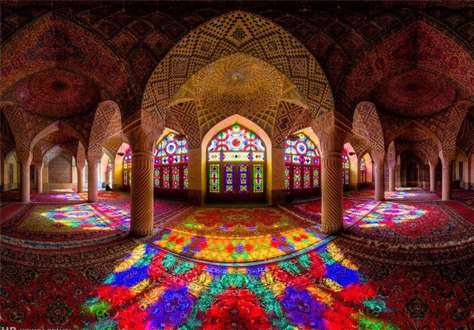

معرفی هنر و تاریخ معماری اسلامی
معماری اسلامی یکی از سبکهای برجسته معماری است که از عناصر فرهنگی، دینی و هنری اسلام الهام گرفته است. این سبک با ویژگیهایی همچون تقارن، استفاده از الگوهای هندسی پیچیده، کاشیکاریهای رنگارنگ و بهرهگیری از خطوط عربی تزئینی شناخته میشود. معماری اسلامی در بناهای مذهبی، فرهنگی و مسکونی کاربرد داشته و همچنان به عنوان یکی از مهمترین میراثهای جهانی مورد توجه قرار میگیرد.
این سبک معماری از قرن هفتم میلادی، همزمان با ظهور اسلام، آغاز شد. اولین نمونههای معماری اسلامی در مساجد اولیه مدینه و مکه شکل گرفت. این سبک با گسترش اسلام به مناطق مختلف جهان مانند خاورمیانه، شمال آفریقا، هند، و اسپانیا به شکلی شگرف توسعه یافت. نمونههایی از این گسترش شامل مسجد قرطبه در اسپانیا و تاج محل در هند است.
مسجد محل نیایش و عبادت میباشد. انسان سعی میکند به شهر معنوی سفر و مهاجرت کند و از جاهلیت به افسانه نزدیک شود و اینگونه روح او کشف میشود. عمدتاً مساجد ایرانی از الگوی معماری پیروی میکنند و ویژگیهای مشترکی دارند که لذت بصری ایجاد میکنند و یک سفر معنوی را القا میکنند. که این مدل شامل عناصر رایجی چون شبستان، حرم، منبر، گنبد، گلدسته، صحن، رواق و محراب است که در جهت تشخیص قبله ساخته شدهاند. نور یک مورد از شاخصههای اصلی جهت معماری ایرانی و به ویژه معماری مساجد میباشد، یک نماد الهی و تجلی بخش پروردگار میباشد که در خانه خود که همان مسجد میباشد. در اثر کاشی کاریهای براق و صیقلی که بر روی آن وجود دارد بازتاب میکند. کف و گاهی آینه کاری روی سقف برای ایجاد انعکاس زیبایی از نور است. مورد دیگر از ویژگیهای مساجد میتوان به رنگ و فرم سازهها اشاره کرد که همچنان جایگاه خود را نیز حفظ کردهاند. در ادامه به بررسی انواع رنگها نیز اشاره مینماییم: رنگ سبز که با ترکیب کردن آن با رنگ زرد و آبی به معنای آرامش و امید همراه با علم و ایمان نیز میباشد. رنگ سفید به معنای وجود مطلق که از طریق نور به وجود میآید، و همچنین نشانه کثرت است و با وحدت ارتباط ذاتی دارد. رنگ فیروزهای به معنای تقدس و رنگ زرد به معنای نورانی یا روشنایی میباشد. رنگ لاجوردی به معنای آرامش و پاکی نیز میباشد. این رنگ در مساجد به معنای وسعت بیکران آسمان نیز میباشد. وجود حوض در صحن مسجد از ویژگیهای بارز معماری مسجد میباشد. وجود حوض نماد و اساس زندگی است و همچنین آلودگی و پلیدیها را نیز پاک میکند. استفاده و کاربرد متفاوت از آب در مسجد بر سیالیت و ضعف بناهایی که انسان برای ابدیت خود میسازد میافزاید و انعکاس بنای مسجد در حوض، آینهای برای حضاران ایجاد میکند.
معماری اسلامی تأثیرات گستردهای بر معماری و هنر جهان داشته است. برخی از مهمترین این تأثیرات عبارتند از:
این تأثیرات نشاندهنده قدرت و جذابیت بیپایان معماری اسلامی در طول تاریخ و در فرهنگهای مختلف است.